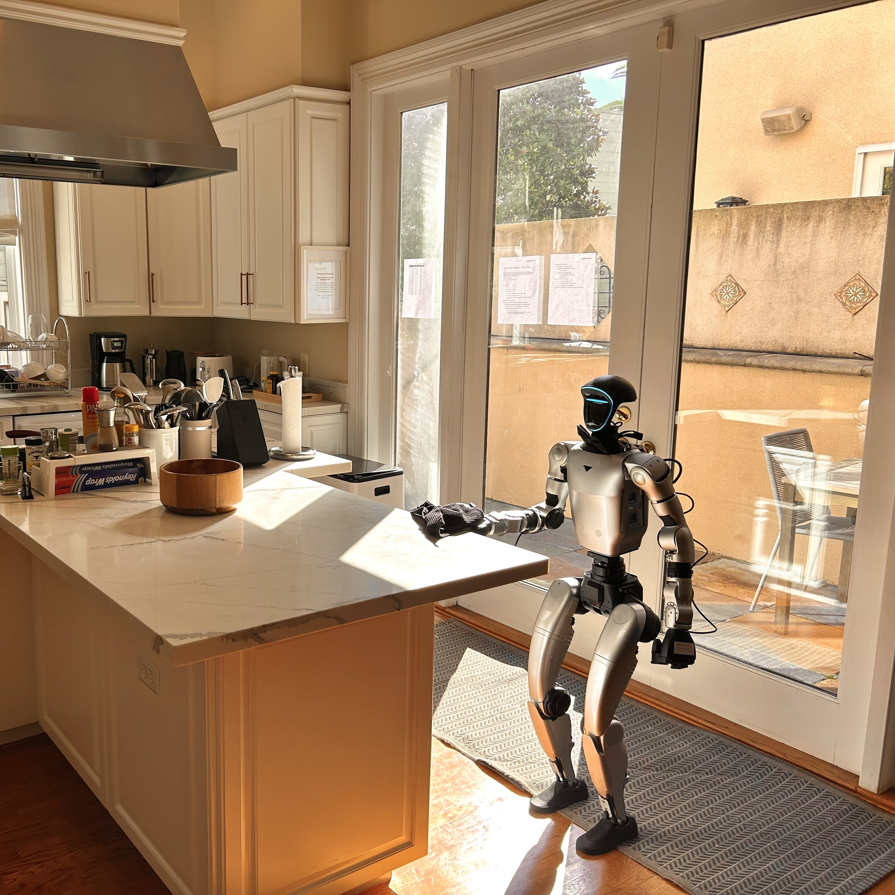

Building Gatsby

As of January 2026, I'm officially dropped out from the University of Chicago to start a robotics company called Gatsby. We're backed by NVIDIA Inception and Entrepreneurs First, and we're operating under a parent company called West Egg Labs (yes, it's a Gatsby reference).
The core vision of the company is "enabling human robot interaction". In the short term we're going after a universal painpoint: cleaning. The vision right now is simple: you click a button on your phone, a humanoid robot comes to your apartment, cleans, leaves. That's our schtick. I'd love to say we're building the future, but we've already built it. Right now (4/12/26) we're live in SF and you can download our iOS app. We charge a flat $150 per clean regardless of apartment size, the average cleaning service in SF runs $150-$300.
Why cleaning?
For our first beachhead in the bigger vision, we landed on cleaning for a few reasons. A) as mentioned above, it's so universally hated. When thinking about the things consumers already hate, the three we came up with were driving someone to the airport, moving and cleaning. The first has already been solved by Uber, the other 2 haven't seen innovation since the invention of the horse carriage and broom, respectively. B) consumers already have a budget for cleaning. We don't have to create an entire market for home cleaning, people already spend a bunch of money on it. Now it's just about creating a superior service to what exists.
Why build this?
The idea behind Gatsby is pretty simple: nobody likes cleaning their apartment and the current alternative, hiring a stranger to come into your home, has its own set of problems. Things go missing, it's a violation of privacy, people cancel last minute, you have to mold your schedule around another person's and a surprisingly common complaint was a feeling of guilt. To the last, a lot of cleaners in the US come from outside the country and there's this unspoken agreement that you're underpaying them. We're proposing a solution to all of this @ Gatsby.
Why is this different?
The key to what we're building at Gatsby is the distribution platform, not the underlying robots. An analogy I like to give is Cursor v. Claude Code. By definition, Claude Code only uses Anthropic models - Anthropic is both the model builder and distributor. We look at Cursor and they're in a beautiful position - they allow users to use what's best on a given day. If Claude Opus is the best today, but in a week Gemini is the best, users can switch - they're model agnostic. We're proposing the same thing here - we are robot agnostic. You look at some of our (fantastic) "competitors", including Sunday, Figure, 1X, all of them are competing on the fundamental robotic models. The theory is this arms race will cause a competition to the bottom - who can make the best/cheapest robot and deploy it well. Joining in this race would be foolish, we're interested in creating the consumer layer for robotics.
What's next?
Right now, growth. We already have a long waitlist here in SF and the goal is to start rolling out a bunch of cleanings. But cleaning is where we're starting, not where we're ending. The underlying platform we're building - the navigation, the dexterity, the ability to operate autonomously in a real home - that's the real product. Cleaning is our wedge.